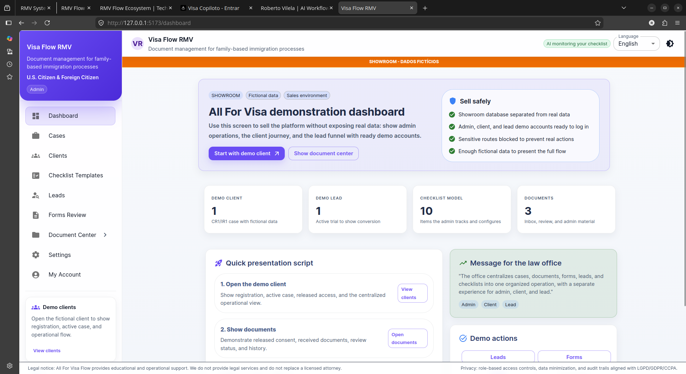

Client operations · Workflow design · AI-assisted implementation
All For Visa Flow
Turning frontline experience into a structured document-preparation workflow
Since August 2021, I have handled client inquiries, document preparation, and follow-up for U.S. visa services. Across 200+ cumulative client engagements, I encountered recurring operational problems: fragmented information, repeated document requests, and case status that depended on searching conversations.
I used that experience to design a seven-stage workflow and direct its AI-assisted implementation. My responsibilities covered requirements definition, business rules, interface and API specifications, acceptance testing, and daily client operations.
200+ client engagements
Direct client service experience since August 2021 that informed the workflow requirements.
3–4 business days
Observed preparation time in the structured workflow, compared with a previous contractual timeframe of up to 15 calendar days. Measurement context .
- My role
- Client Operations & Workflow Implementation
- Domain
- U.S. visa document preparation: K-1, CR, and IR
- Application stack
- React · FastAPI · PostgreSQL
- Implementation approach
- AI-generated code under my specification, review, and acceptance testing
The business problem
The service depended on information that was difficult to track.
Client details, document requests, and case notes were distributed across WhatsApp, email, and spreadsheets. Understanding the current state of a case required reconstructing its history.
A document could arrive without resolving the original request. An incomplete submission could trigger another conversation without a clear record of what remained pending. Requirements were known by the operator, but were not consistently represented in a shared workflow.
These conditions created repeated follow-up and additional review work. The previous contractual preparation timeframe was up to 15 calendar days.
Frontline experience as the starting point
Because I handled the operation directly, I could identify where the process broke down and translate those recurring problems into system requirements.
My responsibility
I connected client service, process design, and implementation.
Client operations
I reviewed submitted documents and client-provided information, entered the appropriate information into official forms, identified incomplete or incorrect items, and followed up on corrections. I also conducted individual document-guidance meetings for the consular stage.
Workflow and requirements
I mapped the preparation process, defined the information each stage required, and documented the conditions for a case to advance. I specified document requirements by category and the handling of missing or rejected items.
Implementation direction
I translated operational needs into interface and API requirements for an AI-assisted application. I reviewed proposed solutions, requested corrections, and checked whether the delivered behavior matched the intended workflow.
Validation and acceptance
I tested the workflow with real client cases, reviewed outputs against document requirements, and retained the final acceptance decision.
AI generated the code. My responsibility was to define what the system needed to do, direct iterations, and determine whether the result supported the operation.
From operational problems to system requirements
Each control addressed a problem encountered in daily work.
| Operational problem | Requirement I defined | Resulting capability |
|---|---|---|
| Client information scattered across channels | Consolidate client and case information | A central record for intake and case details |
| Document requests difficult to follow | Track each requested item separately | Requested, Received, Accepted, and Rejected states |
| Corrections losing context in conversations | Record the reason for rejection | Item-specific correction notes for the client |
| Different categories requiring different documents | Generate requirements from the contracted service and case category | A case-specific document list |
| Status questions requiring manual reconstruction | Maintain case status and next action | A visible record of progress and pending work |
| Completeness depending on operator judgment alone | Require item-by-item verification and human acceptance | A defined review checkpoint before advancement |
These requirements came from direct service experience. The 200+ engagements provided the operational context for the design; they represent my cumulative client work across the operation.
The seven-stage workflow
A defined path from intake to reviewed delivery.
-
STEP 01
Structured intake
Collect client identity, case category, dependents, and initial documentation in one record.
-
STEP 02
Case classification and document requirements
Match the contracted service and case category to the mandatory document list.
-
STEP 03
Standardized information collection
Use defined fields and required inputs to collect consistent information for subsequent steps.
-
STEP 04
Document collection and correction tracking
Track each document individually. Record whether it has been requested, received, accepted, or rejected, and explain required corrections.
-
STEP 05
Checklist verification
Review the assembled materials item by item against the applicable requirements. This is a review procedure; checklist completion is not presented here as an automated feature.
-
STEP 06
Human review and acceptance
Assess the document set and decide whether it can advance. Final acceptance remains a human responsibility.
-
STEP 07
Status tracking and delivery
Maintain the current stage, pending items, and next action so client communication can follow the case record.
Interface evidence



Validation in real client work
Delivery was checked against operational requirements.
I used real cases to verify whether the workflow supported the preparation process:
- Checked that the required document list corresponded to the case category and contracted service.
- Reviewed submitted documents against the applicable checklist.
- Identified incomplete or incorrect items and communicated the required correction.
- Tracked pending submissions and reviewed resubmitted materials.
- Requested corrections when system behavior failed to meet the operational requirement.
- Retained responsibility for accepting the assembled document set.
This combined system acceptance testing with the document-review work required to deliver the service.
Results and measurement context
3–4 business days
Observed preparation time in the structured workflow, compared with a previous contractual timeframe of up to 15 calendar days.
200+ client engagements
Direct work since August 2021, including inquiries, contracts, document preparation, correction follow-up, and client guidance.
Turnaround context. This is an observed operational result from real client use. The comparison combines a historical contractual timeframe with observed preparation times; it was not produced by a standardized historical measurement study.
Engagement context. This experience provided the practical basis for identifying recurring problems and defining the workflow. The figure describes cumulative service engagements, rather than a count of cases processed through the application.
Capabilities demonstrated
| Capability | Evidence in this project |
|---|---|
| Operational diagnosis | Identified recurring friction through direct client service |
| Requirements definition | Converted document-handling needs into fields, rules, states, and acceptance criteria |
| Workflow design | Defined seven stages with dependencies and review checkpoints |
| AI-assisted implementation direction | Specified behavior, reviewed deliveries, and directed corrections |
| Quality assurance and acceptance testing | Checked system behavior and document outputs against operational requirements |
| Client communication | Managed requests, explained corrections, and followed up on pending items |
| Human oversight | Retained final responsibility for document-set acceptance |
Scope
This case concerns document preparation, client support, and workflow implementation for U.S. visa services. Legal advice, legal representation, and government approval decisions fall outside its scope. The metrics describe service activity and preparation time.
From understanding the work to making it repeatable.
This project demonstrates how I use frontline experience to define requirements, structure workflows, and direct AI-assisted implementation—with operational testing and human accountability.
I bring that approach to roles in Customer Success Operations, workflow implementation, and AI-assisted process improvement.